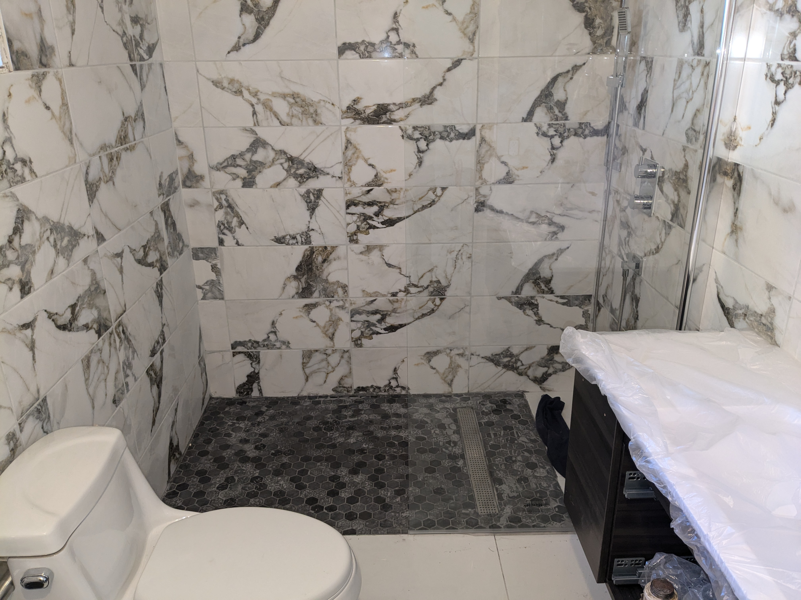

Services de Rénovation Intérieure
Nos services experts en plomberie garantiront un processus de rénovation efficace et sans tracas.
- Nous avons des plombiers expérimentés qui s’occuperont de toutes les tâches de plomberie liées à la rénovation, vous faisant ainsi gagner du temps et des efforts.
- Notre équipe veillera à ce que tous les appareils de plomberie soient installés correctement, évitant ainsi de futures fuites ou problèmes.
- Vous pouvez compter sur notre expertise en plomberie pour garantir que votre nouvelle salle de bain dispose d’un débit d’eau et d’un drainage adéquats.
- Nous utilisons des matériaux et équipements de plomberie de haute qualité, garantissant la durabilité et la longévité de votre salle de bain rénovée.
- Nos services complets de plomberie comprennent l’installation, les réparations et l’entretien, vous offrant tranquillité d’esprit et commodité.
Galerie
×